完成イメージ
最終的にこのダッシュボードを作ります。
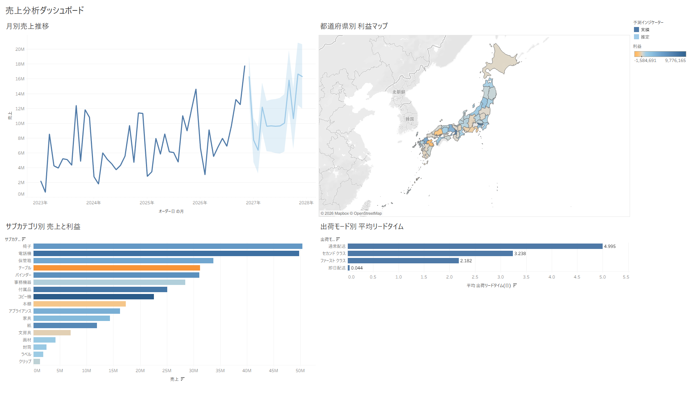
この演習で触れる Tableau の基本機能
- データへの接続、ディメンションとメジャー、離散と連続の違い
- マーク（棒・線・マップ）と色の使い方
- アナリティクス機能：傾向線・予測（統計的な分析を 1 操作で追加）
- 計算フィールド（日付の差から出荷リードタイムを算出）
- ダッシュボードの組み立てとフィルターアクション
1データに接続する
Tableau に付属のサンプルデータ「サンプル - スーパーストア」を開きます。
- Tableau Desktop を起動します。スタート画面が開きます。
- 左側の「保存されたデータ ソース」にある「サンプル - スーパーストア」をクリックします。
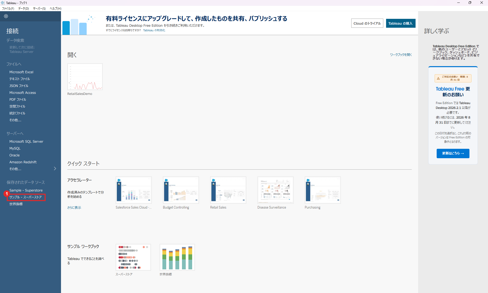
- サンプル - スーパーストア：日本語版のサンプルデータ。「Sample - Superstore」は英語版です。
2画面の見方
データに接続すると、空のワークシート（シート 1）が開きます。まず 4 つの領域を覚えます。
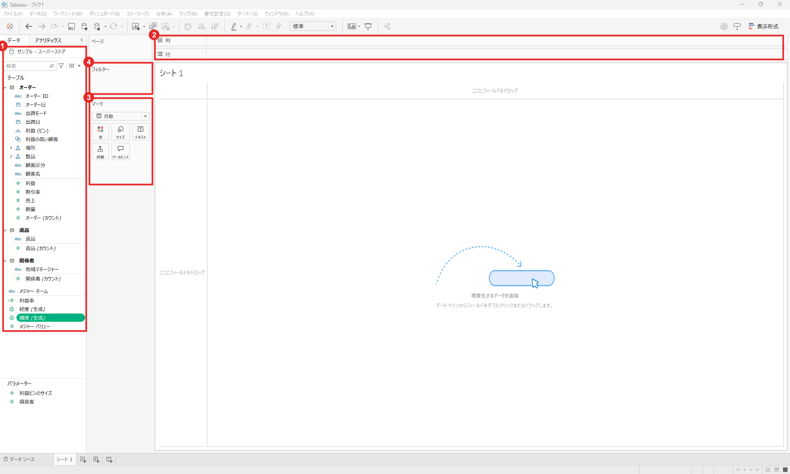
- データペイン：使えるフィールドの一覧。ここから画面中央へドラッグして分析します。
- 列・行シェルフ：グラフの横軸（列）と縦軸（行）に何を置くかを決める場所。
- マークカード：グラフの見た目を決める場所。色・サイズ・ラベル・詳細などにフィールドを置きます。
- フィルターカード：表示するデータを絞り込みます。
ディメンションとメジャー
データペインのフィールドは 2 種類に分かれます。
- ディメンション（青）：カテゴリ・日付など「切り口」。例：サブカテゴリ、出荷モード、オーダー日
- メジャー（緑）：集計できる数値。例：売上、利益、数量
3月別売上推移＋予測（シート 1）
売上の時系列を折れ線で描き、統計的な予測を重ねます。
- データペインの「オーダー日」をダブルクリックします。列に「年(オーダー日)」が入ります。
- 続けて「売上」をダブルクリックします。年ごとの合計が数値の表で表示されます。
- マークカードにある「合計(売上)」を行シェルフへドラッグします。年単位（4 点）の折れ線グラフになります。
- 列の「年(オーダー日)」を右クリックし、メニューの下段（連続）の「月」を選びます。（次の図）
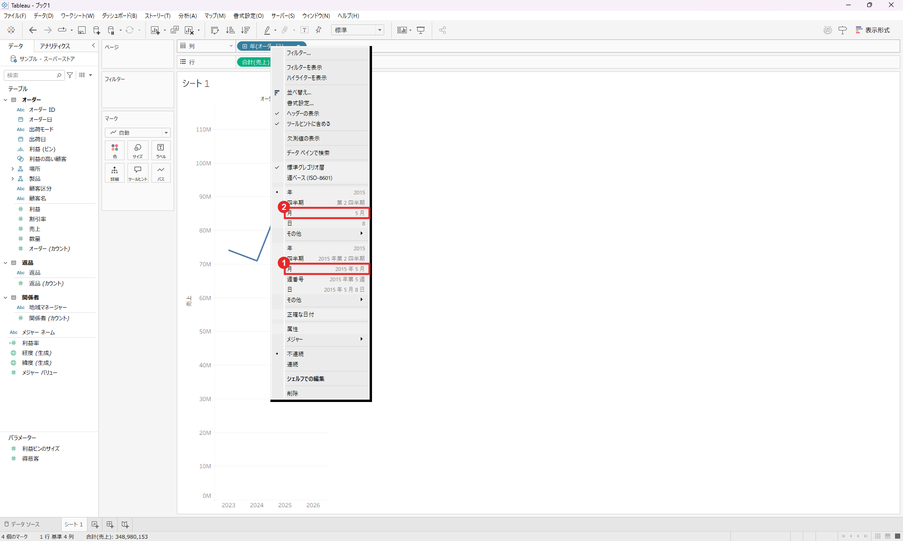
- 連続の「月」（表示例：2015 年 5 月）。時系列の折れ線では基本的にこちらを選びます。
- 離散の「月」（表示例：5 月）。1 月〜12 月の月名ごとに別々の区分として並べたいときに使います。
- 画面下のシート名「シート 1」をダブルクリックして「月別売上推移」に変更します。
- ペイン上部のタブをアナリティクスに切り替えます。
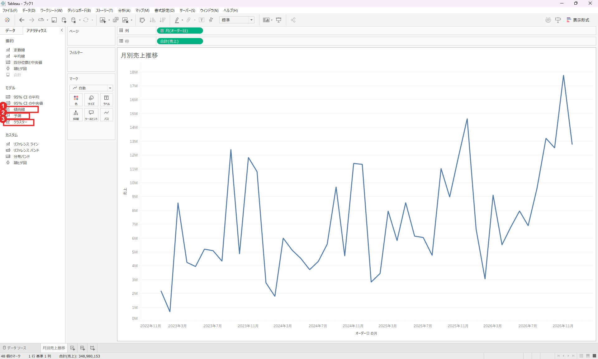
- 傾向線：回帰による全体のトレンド線（線形・対数など）。
- 予測：将来の値の推定と、その幅（予測区間）を描きます。
- クラスター：似た傾向のデータをグループ分けします（今回は使いません）。
- 「傾向線」をグラフ上へドラッグします。点線のトレンド線が追加されます。
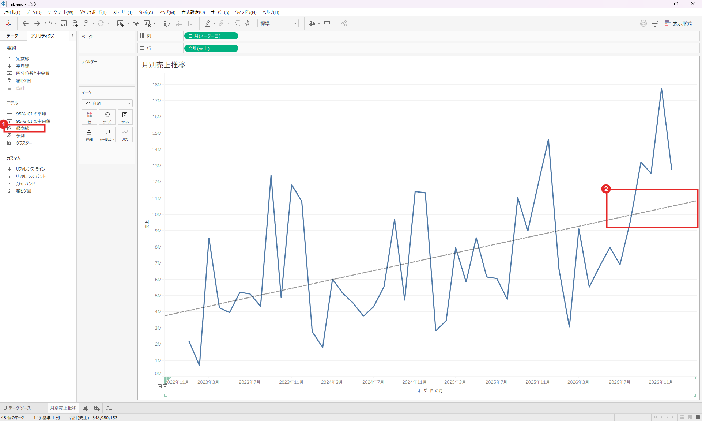
- アナリティクスの「傾向線」
- 追加された傾向線（点線）。月ごとの上下が大きくても、全体は右肩上がりだと分かります。
- 次に「予測」をダブルクリックします。傾向線と予測を同時に置くと線が二重になって読みにくいので、ここでは Ctrl+Z で傾向線を戻してから予測だけを追加しています。
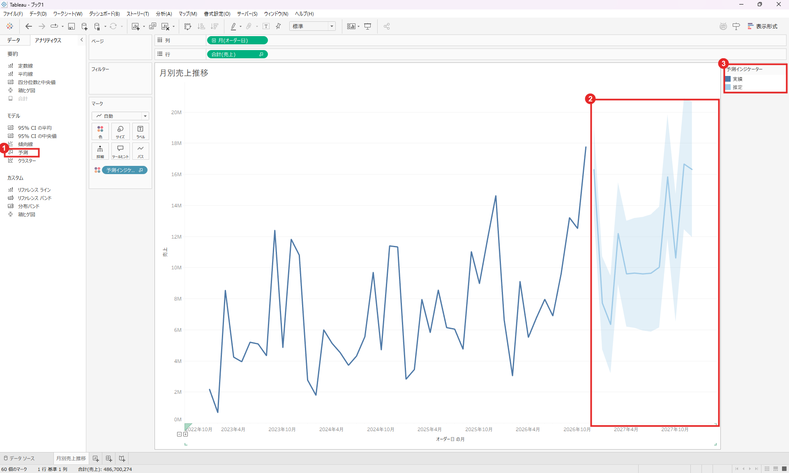
- アナリティクスの「予測」
- 予測区間：薄い水色の帯。先に行くほど幅が広がり、不確実性が増すことを表します。
- 予測インジケーター：濃い青が「実績」、薄い青が「推定」。
4サブカテゴリ別 売上と利益（シート 2）
売上の大きさは棒の長さ、利益は色で表し、「売れているのに儲かっていない」商品を探します。
- 画面下の「新しいワークシート」アイコンをクリックし、データタブに戻ります。
- データペインの「製品」の左の矢印（▶）で展開します。中に「カテゴリ」「サブカテゴリ」「製品名」があります。
- 「サブカテゴリ」を行シェルフへドラッグします。
- 「売上」を列シェルフへドラッグします。
- 「利益」をマークカードの「色」へドラッグします。
- ツールバーの「降順に並べ替え」をクリックし、シート名を「サブカテゴリ別 売上と利益」に変更します。
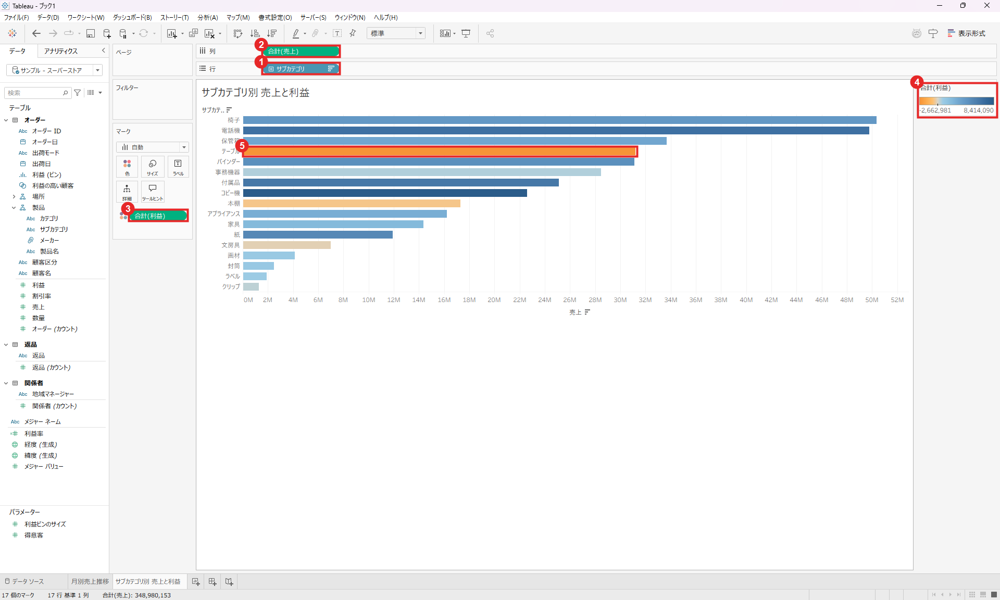
- 行：サブカテゴリ（ディメンション）
- 列：合計(売上)（メジャー）。棒の長さになります。
- 色：合計(利益)。青は利益が大きく、オレンジは小さい（マイナス）ことを表します。
- 凡例：利益の範囲（−2,662,981 〜 8,414,090）。
- テーブル：売上は大きいのに、色がオレンジです。
5都道府県別 利益マップ（シート 3）
利益の地域差を日本地図で見ます。
- 新しいワークシートを追加します。
- データペインの「場所」を展開し、「都道府県」をダブルクリックします。緯度・経度が自動で置かれ、都道府県ごとの点が地図に打たれます（45 マーク）。
- マークカードのマークの種類（「自動」と書かれたドロップダウン）をクリックします。
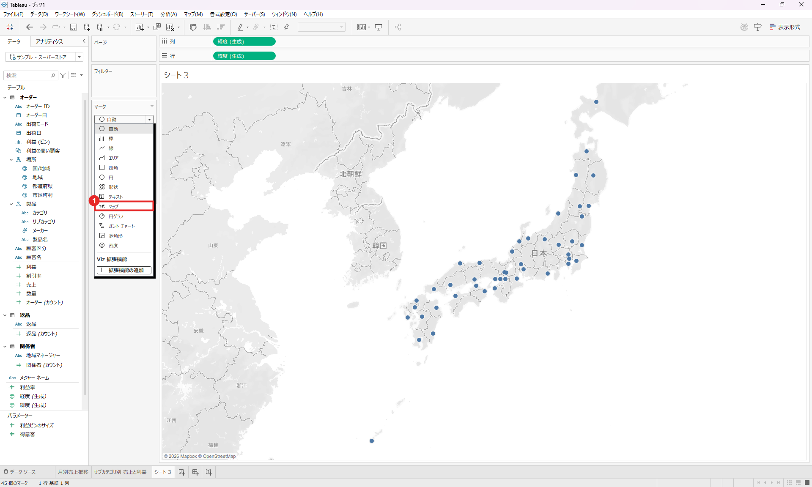
- 「マップ」を選ぶと、点ではなく都道府県の領域が塗りつぶされます。
- データペインの「利益」をマークカードの「色」へドラッグします。
- シート名を「都道府県別 利益マップ」に変更します。
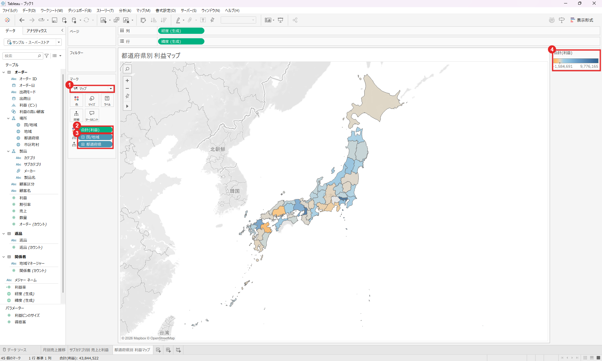
- マークの種類：マップ（塗りつぶし）
- 色：合計(利益)
- 詳細：国/地域 と 都道府県。「どの単位で塗り分けるか」を決めています。
- 凡例：利益の範囲（−1,584,691 〜 9,776,165）。
6計算フィールドで出荷リードタイムを作る（シート 4）
元データにない指標を、計算式で自分で作ります。「オーダー日から出荷日まで何日かかったか」を算出します。
- 新しいワークシートを追加します。
- メニューの「分析」→「計算フィールドの作成」を選びます。
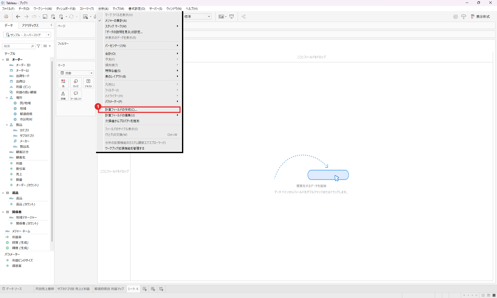
- 分析メニューの「計算フィールドの作成…」
- ダイアログの名前欄に「出荷リードタイム(日)」、式の欄に次の式を入力します。
DATEDIFF('day', [オーダー日], [出荷日])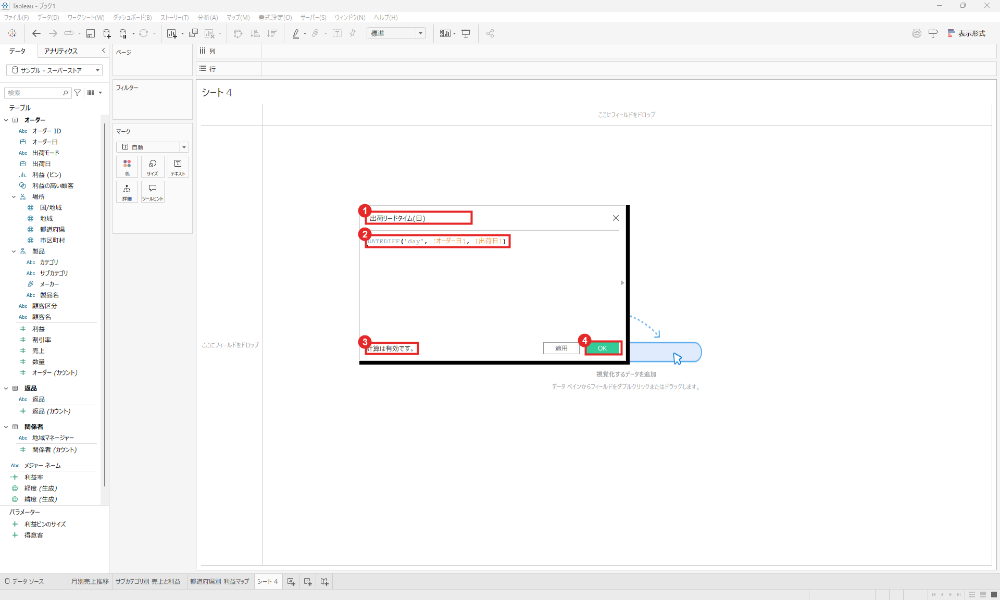
- 名前：データペインに表示されるフィールド名になります。
- 式：
DATEDIFF('day', 開始, 終了)は 2 つの日付の差を日数で返します。フィールド名は[ ]で囲みます。 - 検証：「計算は有効です。」と出れば式は正しいです。
- OK：フィールドを作成します。
- データペインに追加された「出荷リードタイム(日)」を列シェルフへ、「出荷モード」を行シェルフへドラッグします。
- メジャーは初期状態で「合計」です。列のピルを右クリック → 「メジャー(合計)」 → 「平均」を選びます。
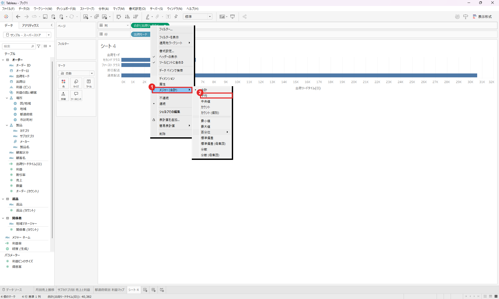
- 右クリックメニューの「メジャー(合計)」
- サブメニューから「平均」を選択。ほかにも中央値・最小値・最大値・標準偏差などを選べます。
- ツールバーの「降順に並べ替え」と「マーク ラベルを表示」（T のアイコン）をクリックし、シート名を「出荷モード別 平均リードタイム」に変更します。
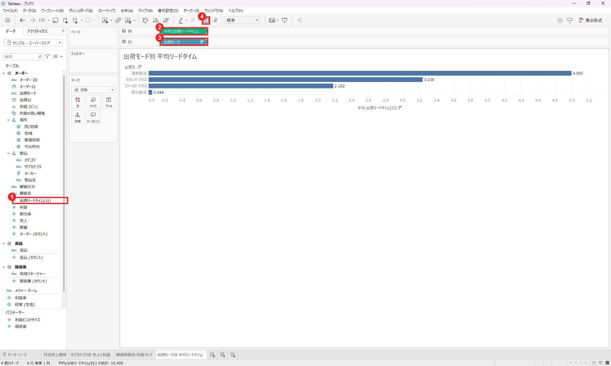
- 作成した計算フィールド（アイコンが
=#になります） - 列：平均(出荷リードタイム(日))
- 行：出荷モード
- マーク ラベルを表示：棒の端に数値が出ます。
| 出荷モード | 平均リードタイム（日） |
|---|---|
| 通常配送 | 4.995 |
| セカンド クラス | 3.238 |
| ファースト クラス | 2.182 |
| 翌日配送 | 0.044 |
7ダッシュボードにまとめる
4 つのシートを 1 画面に並べ、クリックで連動して絞り込めるようにします。
- メニューの「ダッシュボード」→「新しいダッシュボード」を選びます。
- 左ペインの「サイズ」をクリックし、「固定サイズ」を「自動」に変更します。ウィンドウいっぱいに広がります。
- 左ペインの「シート」から、次の順にドラッグしてキャンバスへ置きます。
- 「月別売上推移」をキャンバスの中央へ（全面に広がります）
- 「都道府県別 利益マップ」を右端へ（左右に分割されます）
- 「サブカテゴリ別 売上と利益」を左のグラフの下寄りへ
- 「出荷モード別 平均リードタイム」を右のグラフの下寄りへ
- 左下の「ダッシュボードのタイトルを表示」にチェックを入れ、タブ名を「売上分析ダッシュボード」に変更します。
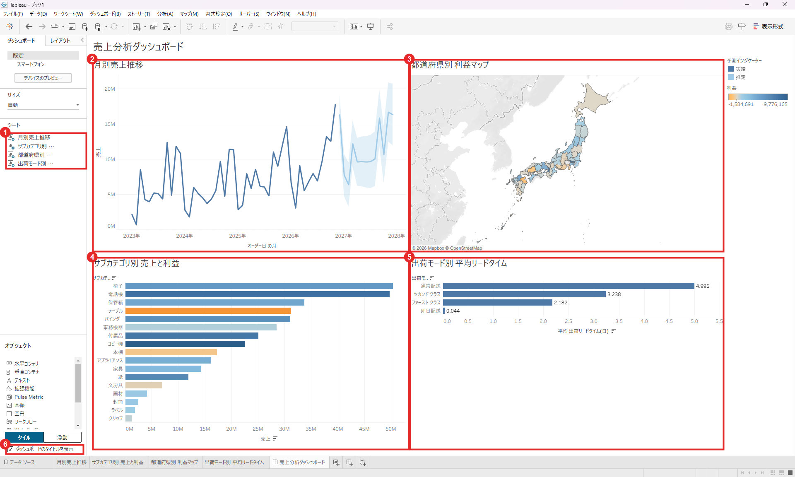
- シート一覧：ここからキャンバスへドラッグします。
- 月別売上推移（左上）
- 都道府県別 利益マップ（右上）
- サブカテゴリ別 売上と利益（左下）
- 出荷モード別 平均リードタイム（右下）
- ダッシュボードのタイトルを表示
クリックで連動させる（フィルターアクション）
- 「サブカテゴリ別 売上と利益」をクリックして選択し、右上に出るツールバーの漏斗（フィルター）アイコン「フィルターとして使用」をオンにします。
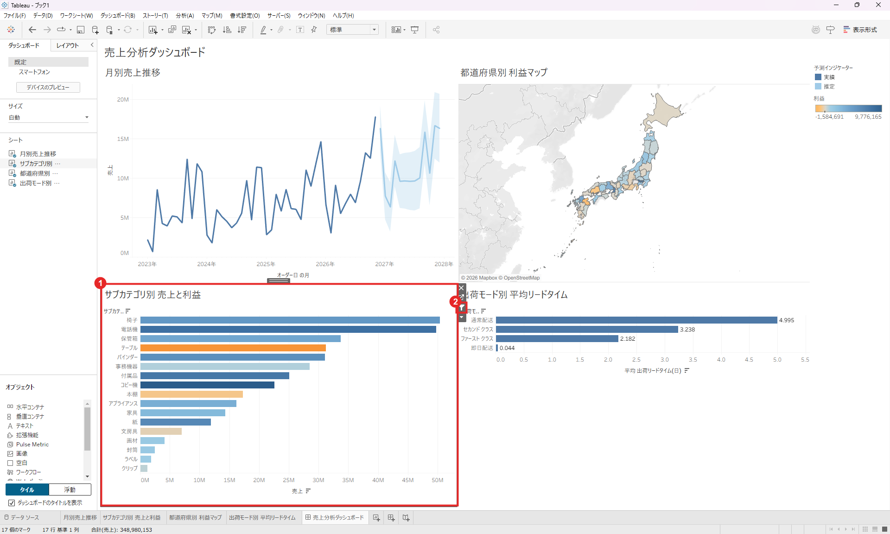
- 選択したグラフ（黒い枠）
- フィルターとして使用（漏斗アイコン）：このグラフで選んだ値で、他のグラフを絞り込みます。
- 棒グラフの「テーブル」をクリックします。他の 3 つのグラフが「テーブル」だけの表示に切り替わります。もう一度クリック（または空白部分をクリック）すると解除されます。
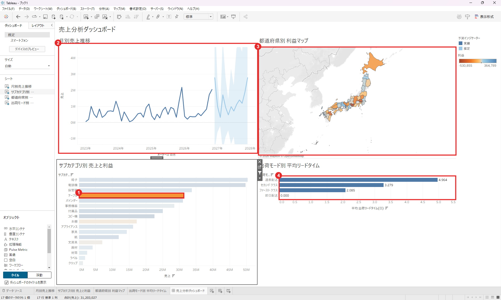
- クリックした「テーブル」の棒（それ以外は薄くなる）
- 月別売上推移：テーブルだけの売上と予測に変化
- 都道府県別 利益マップ：テーブルの利益で色分けし直し。オレンジの県が赤字に当たる県。
- 出荷モード別 平均リードタイム：テーブルだけの平均に変化
8保存する
作ったワークブックをファイルとして保存します。
- Ctrl+S を押します（初回は「名前を付けて保存」が開きます）。
- ファイルの種類は「Tableau ワークブック (*.twb)」のまま、ファイル名を付けて保存します。この演習では
workbooks/superstore-sales-dashboard.twbとして保存しました。
| 形式 | 中身 | 向いている用途 |
|---|---|---|
.twb | ワークブックの定義のみ（テキストの XML）。データは含みません。 | GitHub などで管理する。サイズが小さく、差分も追える。 |
.twbx | ワークブック ＋ データをまとめたパッケージ。 | 他の人にデータごと渡す。 |
.twb にはデータファイルの保存場所（パス）が書かれます。パスにはお使いの PC のユーザー名が含まれることがあるので、GitHub などに公開する前に確認してください。.twb はテキスト（XML）なので、エディタの検索置換で C:/Users/自分のユーザー名/ を C:/Users/USERNAME/ に置き換えられます。このリポジトリのワークブックもこの方法で置換しています。
完成したワークブックは GitHub の workbooks/superstore-sales-dashboard.twb に置いています。開き方は付録の表を参照してください。
9分析結果の語り方と次の一歩
作って終わりにせず、「何が分かり、どう動くか」を言葉にします。
30 秒で説明する例
「Tableau で小売のサンプルデータ（Superstore）を分析し、4 つのビューを 1 つのダッシュボードにまとめました。年間売上は 2024 年に約 4% 落ち込んだ後、2025 年は約 30%、2026 年は約 21% 伸びています。サブカテゴリ別では、『テーブル』が売上 4 位規模なのに利益は約 −266 万と赤字で、フィルターアクションで見ると、どの都道府県で赤字が出ているかまで確認できます。また、オーダー日と出荷日から計算フィールドで出荷リードタイムを作り、通常配送は平均約 5 日、翌日配送はほぼ 0 日と、モードごとの違いを確認しました。」
ポイントは、数字を根拠に、気づき → 次のアクションまで話すことです。たとえば「赤字の理由（割引率が高いのか）を『割引率』フィールドで調べる」が次の一手になります。
次に練習するとよいこと
- 割引率と利益の関係：散布図を作り、クラスター（アナリティクス）で分けてみる。
- LOD 式（詳細レベルの式）：顧客ごとの初回購入日など、ビューの粒度と別の粒度で集計する。
- パラメーター：ユーザーが指標（売上・利益・数量）を切り替えられるようにする。
- 自分で選んだデータ：公開データセットで同じ流れ（接続 → 4 ビュー → ダッシュボード → 気づきの言語化）を繰り返す。
- 応募先の募集要項に書かれているスキル（SQL・Python・統計・BI など）と照らして、足りない部分を優先的に補う。
付録：つまずきやすい所
| 症状 | 原因と対処 |
|---|---|
| 折れ線が年ごとの 4 点だけになる | 日付が「年（離散）」のまま。日付ピルを右クリックし、下段（連続）の「月」を選ぶ。 |
| 数値が意図より大きい（合計になっている） | メジャーの既定の集計は「合計」。ピルを右クリック → メジャー → 平均 などに変更する。 |
| 傾向線と予測が重なって読みにくい | どちらか片方を Ctrl+Z で戻す、またはビューから削除する。 |
| ダッシュボードで、グラフが画面幅いっぱいの行になった | ドロップ位置が外枠の縁だった。Ctrl+Z で戻し、既存グラフの内側の下寄りに置き直す。 |
| クリックしても他のグラフが変わらない | 「フィルターとして使用」（漏斗アイコン）がオフ。クリック元のグラフを選択し、オンにする。 |
| 絞り込みを元に戻したい | 選択中の棒をもう一度クリック、またはグラフの空白をクリックする。 |
| ワークブックを開くと「参照ファイル…が見つかりませんでした。別のファイルと置換しますか？」と出る | .twb はデータを含まず、保存時のパスを覚えているため。「はい」を選び、Tableau 付属の「サンプル - スーパーストア.xlsx」を指定する。ファイルは通常 ドキュメント\マイ Tableau リポジトリ\データ ソース\<バージョン>\ja_JP-Japan\ にあります。データごと渡したいときは .twbx で保存します。 |